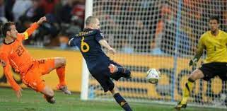
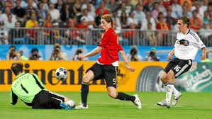
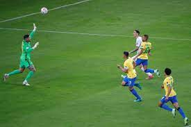

Home
Biografia
Portfolio
Contacto
Mundial de la fifa
Algunes goles en mundiales:
Video not supported
Sonido caracteristico de las vuvuzelas:

Eurocopa
Goles de cr7
Video not suported

Copa America
Goles copa america 2021
